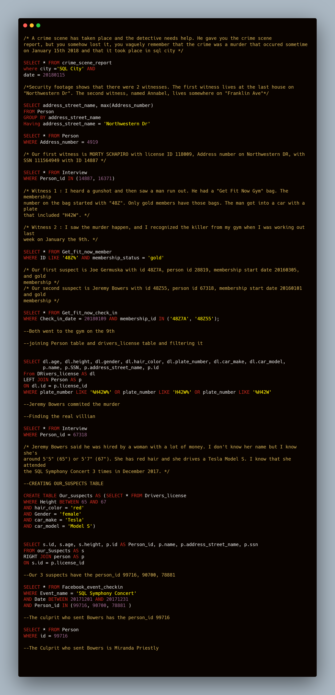

The investigation into the murder in SQL City on January 15th, 2018, commenced with the search for the crime scene report, which showed SQL City as the location and provided the exact date. Subsequently, this effort resulted in the identification of the witnesses involved. The first witness was located through the last house on Northwestern Dr, while the second witness, Annabel, resides on Franklin Ave. Following the witness identification, an interview with the witnesses provided information needed to identify the suspect.

Morty Schapiro, the first witness, described seeing a man flee the scene with a gym bag from Get Fit Now Gym, with a membership number starting with "48Z," which is exclusive to gold members. Additionally, the witness observed the suspect's car license plate containing "H42W." The second witness, Annabel, recognized the murderer from her gym visit on January 9th,which provided a lead in the investigation
Further analysis of gym membership data leads to the identification of two suspects: Joe Germuska and Jeremy Bowers, who are both gold members of Get Fit Now Gym. Subsequent investigation into their gym check-ins on January 9th implicates Jeremy Bowers. This finding prompted a deeper dive into driver's license information, connecting Jeremy Bowers to the crime scene through his vehicle.
As the investigation progressed, Jeremy Bowers reveals that he was hired by a woman who fit a specific physical description and driving a Tesla Model S, who frequented the SQL Symphony Concert in December 2017.
Using this information, a table named Our_suspects was created. Further scrutiny of Facebook event check-ins during the concert period leads to the revelation of the culprit, Miranda Priestly, who had hired Jeremy Bowers for the murder.